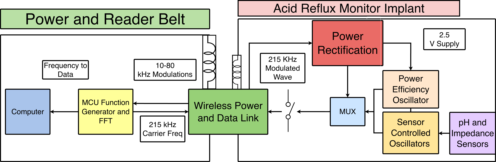
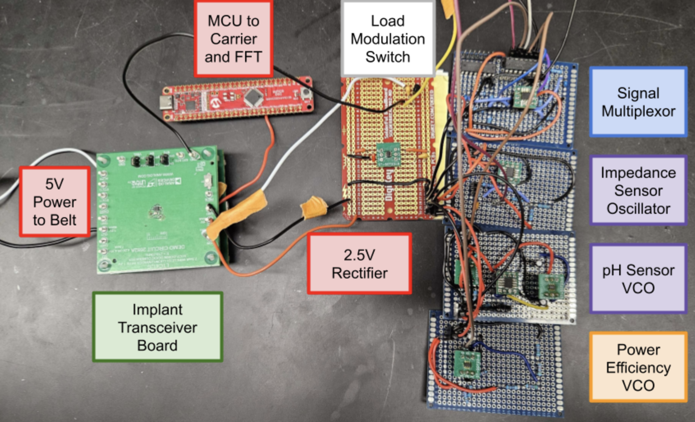
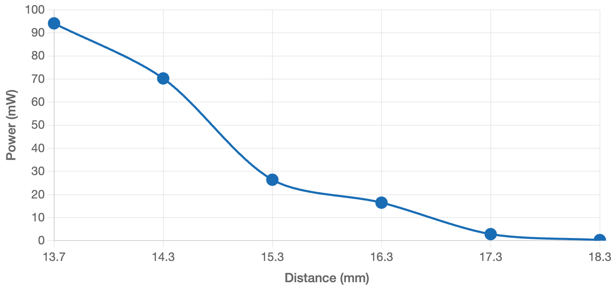

RepHlux — Wireless Batteryless Acid Reflux Monitor
Lucas Kang · lucasjk2004@gmail.com · UCI Engineering Senior Design
University of California, Irvine
B.S. Electrical Engineering & B.A. Music
Sep 2025 – Mar 2026
Page 1 of 2 · Introduction · Block Diagram · Hardware & System Overview
Introduction
ObjectiveDesign a fully wireless, batteryless implantable acid reflux monitor that continuously senses esophageal pH and impedance without a battery or wired connection, powered entirely by inductive coupling from an external belt reader.
ContributionDesigned the implant sensor module and external belt reader using 215 kHz inductive wireless power and passive load-modulation telemetry. Sensor data (pH, impedance, power) is encoded into VCO frequency signals that appear as AM sidebands on the carrier, detected by FFT on the reader DSP. Implemented Bluetooth feedback from MCU to notify patient of power alignment issues.
OutcomeAchieved stable 2.5 V wireless power transfer at 10 cm depth in a torso tissue mockup, ~800 ms telemetry response, and 94 mW output power. System passed IEEE C95.1 power safety limits.
System Block Diagram

📷 rephlux_block.png
System block diagram — power belt + implant
Fig. 1 System block diagram — power and reader belt generates 215 kHz carrier; implant rectifies to 2.5 V, sensor VCOs encode pH and impedance into frequency, MUX selects signal, load-modulation switch impresses sidebands on carrier for FFT readback.
Hardware & System Overview

📷 rephlux_prototype.png
Photo of prototype boards (implant transceiver + belt reader)
Body diagram — implant location, inductive link, impedance + pH sensors, base station FFT readout
Fig. 4 System body diagram — acid reflux monitor implant sits in the esophagus, wirelessly powered by the external belt coil at 215 kHz. Impedance and pH sensors feed VCOs; sidebands appear in the base station FFT.
UCI Engineering
RepHlux — Wireless Batteryless Acid Reflux Monitor
Lucas Kang · lucasjk2004@gmail.com · UCI Engineering Senior Design
University of California, Irvine
B.S. Electrical Engineering & B.A. Music
Sep 2025 – Mar 2026
Frequency response of power, pH, and impedance sensors
Fig. 3 Frequency response — VCO output frequency vs. sensor input for power (green), pH electric potential (blue), and impedance (red). Three distinct frequency bands enable simultaneous demultiplexing.

📷 rephlux_power_dist.png
Distance of coils vs wireless power
Fig. 4 Distance vs wireless power — 94 mW at 13.5 mm, dropping to ~1 mW at 18.5 mm. Operating range maintained at ≤15 mm with voltage regulator feedback loop.
Video Demonstration
demo.mp4 — place in rephlux/ folder
0:00Belt reader powered, carrier at 215 kHz confirmed on oscilloscope
0:10Implant board placed at 10 cm — 2.5 V rectified output verified
0:25pH sensor swept — FFT sideband shifts in real time on PC readout
0:45Impedance sensor swept — second sideband band responds independently
1:00Bluetooth alert triggered when coil misaligned beyond 15 mm threshold
Results & Acknowledgements
Validated Results
94 mW wireless power2.5 V DC rectifiedFFT sidebands verified15 mm operating depthISO 14708 safe voltageAM telemetry confirmed
Acknowledgements
Analog telemetry designed and validated by Lucas Kang as part of UCI Engineering Senior Design under Prof. Cao (hungcao@uci.edu) in collaboration with UCI Hero Lab.